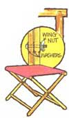
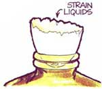
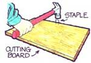
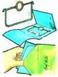
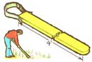
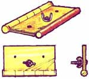
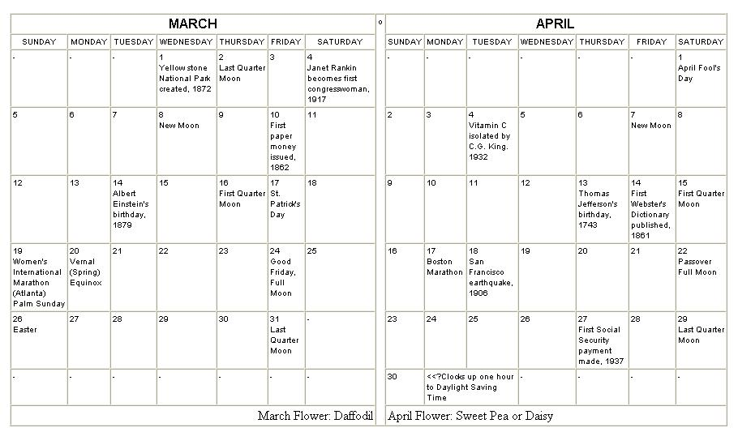

Now's the time to get your camping gear ready for warm weather, and fold-up stools are one of the convenient "luxuries" you won't want to do without.
Make four legs (I" square X 18-1/2 two top pieces (1-1/8 " square X 11"), and two lower rails (both 3/4" square, one 8-1/2" and one 101/2" long) from any sturdy wood you have handy.
Shape the leg ends as shown in the sketch, so they'll fit into 5/8" holes you've bored in the top pieces. (The centers of the slots should be 7-5/8" apart in one bar and 9-5/8" in the other.) In the same way, the lower rails should be fitted into 1/2" cavities drilled 2-1/2" from the bottom of each leg.
Next, construct the joints by boring a hole in the middle of each leg. Insert a bolt through the two crossed legs and rivet it over washers with one washer placed between the legs (see sketch).
Finally, stretch 1/2 yard of 11-inch-wide material over the top and securely nail it to the underside of the upper wooden pieces. Then finish the wood as you desire.
If you ever need to fill a small-necked bottle-but can't seem to find a suitable funnel-try using half an eggshell with a small hole pricked in its end. Briefly place the shell in an oven (brown the surface slightly) and it'll be less brittle and last much longer.
Cooks can slice, chop, or mince foods rapidly if an ordinary staple is attached to their chopping board as shown. When the tip of a pointed kitchen knife is placed under the staple, the blade can be maneuvered expertly with one hand as the vegetables are passed under it with the other. Even when you apply great pressure, the knife will not slip.
It's often difficult to maneuver a recipe book when you're using booth hands to measure and mix ingredients. A book stand like the one in the ske however, will hold the publication securely while allowing you to see the entire page at once.
The holder either can be cut out of the corner of a wooden box, or can consist of two pieces of scrap lumber held together with corner, angle, or shelf bracing. (The length of the back board determines the slope of the book rest.) The front board is then fitted with two screw eyes from which you've removed the section labeled "A"
Here's an amusing, but harmless, old-timey trick for youngsters of all ages: a surprise "letter" which whizzes and whirs when the recipient opens it.
Just tape a U-shaped piece of wire to a sheet of paper (see sketch). Then attach an iron washer or ring to the open part of the "U" with rubber bands. Twist the ring and rubber bands several times, fold the "note", and place it in an envelope.
Now simply wait for an unsuspecting victim!
For weeding and cultivating smaller garden plots (especially crops like onions), a hand hoe simply can't be beat. Take a piece of hardwood (7/8" X 13/4" is a comfortable size) any length that you find suitable (4' works well). Then attach an old bucksaw blade to the handle with bolts, as shown in the sketch.
Most every save-a-buck recycler has a few old door hinges in his collection of treasures. So it's good to know that those finds can be converted into at least two useful, timesaving tools ... with hardly any effort at all!
If you have a two-inch or longer joint hinge, and a bolt about 1/2-inch-long that will fit the hinge's holes, you can create a homemade hand vise for holding small objects. Just put the bolt through the middle hole and replace the nut as shown.
Or-if you've got a complex sanding job ahead?you can make an excellent sander for moldings and other concave surfaces. Take [1] an old hinge, [2] a short dowel the same length as the hinge (different diameter dowels can be used for various sizes of moldings), [3] a piece of sandpaper, and [4] a wing nut and bolt. Then assemble the gadget as shown in the sketch. No more skinned fingers!
In an especially rustic setting (or one which you want to look rustic), tree trunk steps can be the simplest and most inexpensive way you'll find to easily reach the top of a sharp incline or embankment.
Carve the steps out of a log (remember that the larger it is, the wider and more comfortable the footholds will be) with an axe or saw, taking care to make the cuts as evenly spaced and aligned with each other as possible. Then, to steady the setup, scoop out a few inches of earth from the vertical path and lay the trunk in the indentation.
To make a handrail, just drive forked stakes into the ground at intervals along one side of the stairs and rest a straight pole in the 'V's.
|
 |
 |
 |
|
|
 |
 |
|
 |
|
 |